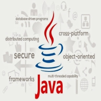
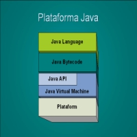
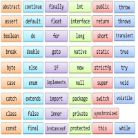
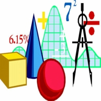

Logica de Programación
Lenguaje de Programación JAVA
-

Lenguaje Java
Es un lenguaje que se ha mostrado ideal para desarrollar aplicaciones de usuario final seguras, distribuidas y basadas en red en un amplio rango de entornos desde los dispositivos de red embebidos hasta su uso para soluciones en Internet.
Características
Lenguaje de propósito general.
Lenguaje Orientado a Objetos.
Sintaxis inspirada en la de C/C++.
Lenguaje multiplataforma.
Lenguaje interpretado.
Lenguaje gratuito. -

Plataforma Java
JVM y API Java
Una plataforma es el ambiente de hardware o software en el cual se ejecutan los programas. En general, la mayoría de las plataformas pueden ser descritas como una combinación de hardware y sistema operativo. Algunas de las plataformas más populares son Windows, Solaris, Linux y MacOS.
La plataforma Java difiere de las anteriores en que ésta es una plataforma basada únicamente en software que corre por encima de las plataformas basadas en hardware. -

Maquina Virtual Java
Java Virtual Machine, JVM
Es una máquina virtual de proceso nativo, es decir, ejecutable en una plataforma específica, capaz de interpretar y ejecutar instrucciones expresadas en un código binario especial (el bytecode Java), el cual es generado por el compilador del lenguaje Java.
La JVM es una de las piezas fundamentales de la plataforma Java. Básicamente se sitúa en un nivel superior al hardware del sistema sobre el que se pretende ejecutar la aplicación, y este actúa como un puente que entiende tanto el bytecode como el sistema sobre el que se pretende ejecutar. Así, cuando se escribe una aplicación Java, se hace pensando que será ejecutada en una máquina virtual Java en concreto, siendo ésta la que en última instancia convierte de código bytecode a código nativo del dispositivo final -

Palabras Clave
Éstas son reservadas y no pueden ser utilizadas como identificadores
abstract - default - if - private - this - boolean - do - implements - protected - throw - break - double - import - public - throws - byte - else - instanceof - return - transient - case - extends - int - short - try - catch - final - interface - static - void - char - finally - long - strictfp** - volatile - class - float - native - super - while - const* - for - new - switch - continue - goto* - package - synchronized
* Son palabras claves de Java que no son usadas actualmente.
** Palabra clave agregada en Java 2
true, false, and null no son palabras claves pero son palabras reservadas, así que tampoco pueden ser utilizadas como identificadores. -

Funciones de Java
Los métodos en Java, las funciones y los procedimientos, especialmente en Java, son una herramienta indispensable para programar. Java nos permite crear o hacer nuestros propios métodos y usarlos sencillamente como también nos facilita hacer uso de los métodos de otras librerías (funciones matemáticas, aritméticas, de archivos, de fechas, etc. Cualquiera que sea el caso, las funciones permiten automatizar tareas que requerimos con frecuencia y que además se pueden generalizar por medio de parámetros o argumentos. Aprender a crear métodos en Java y usarlos correctamente es de gran importancia, separar nuestro código en módulos y según las tareas que requerimos. En java una función debe contener la implementación de una utilidad de nuestra aplicación, esto nos pide que por cada utilidad básica (abrir, cerrar, cargar, mover, etc.) sería adecuado tener al menos una función asociada a ésta, pues sería muy complejo usar o crear un método que haga todo de una sola vez, por esto es muy buena idea separar cada tarea en una función o método (según corresponda).
Funciones
Las funciones son un conjunto de líneas de código (instrucciones), encapsulados en un bloque, usualmente reciben parámetros, cuyos valores utilizan para efectuar operaciones y adicionalmente retornan un valor. En otras palabras una función puede recibir parámetros o argumentos (algunas no reciben nada), hace uso de dichos valores recibidos como sea necesario y retorna un valor usando la instrucción return, si no retorna algo, entonces no es una función. En java las funciones usan el modificador static.